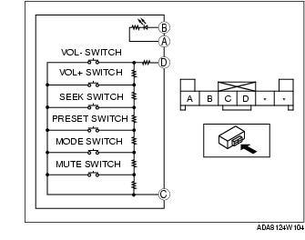
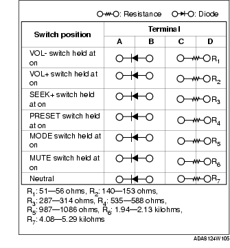

Audio control switch inspection
1. Disconnect the negative battery cable.
2. Remove the driver-side air bag module. (See DRIVER-SIDE AIR BAG MODULE REMOVAL/INSTALLATION.)
3. Disconnect the audio control switch connector.
4. Measure the resistance and inspect for continuity between the audio control switch terminals.

